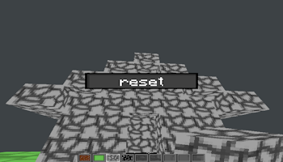

About
Who Am I?
My name is Nelson Rodriguez and I'm currently a second-year Game Design and Development student at the
Golisano College of Computing and Information Sciences. When it comes down to it, my passion is software programming, especially in the context of
games and interactive media. I truly enjoy learning about the foundational systems (i.e. physics engine,
graphical pipelines, gameplay systems) behind many of the awesome games that I play and make.
What Can I Do?
My primary skillset revolves around programming, however, I do have expierence using asset creation tools (Maya, Shotcut, Paint.Net, and Aseprite). While taught
both C# and HTML/CSS/JavaScript from college classes, I have gone out and expiremented with C++, OpenGL (and some of the shader programming that comes with it),
Lua, and Love2D.
What Will You Find?
On this site you'll find all of my notable projects and links to their repositories (to view one, click on the title of the project). Each project has specific tags to help you quickly identify core details about
the project. Additionally, if there are any projects made with JavaScript or WebGL (Unity), there will be seperate pages where you can view and play them!
You can find my contact information at the bottom of this page. Click "Contact" in the navigation bar to instantly jump to it!
-
- 
-

A functional demo of “Minecraft” using C++ and OpenGL.
Includes multiple core Minecraft features such as physics, breaking/place blocks, targeted block highlighting, a simple GUI, and hotbar functionality.
-
An action platformer where the player uses a companion robot to navigate otherwise unreachable terrain, while also attempting to defend themselves from the remnants of the previous security force roaming a desolate laboratory.
Programmed in Monogame with C#. -